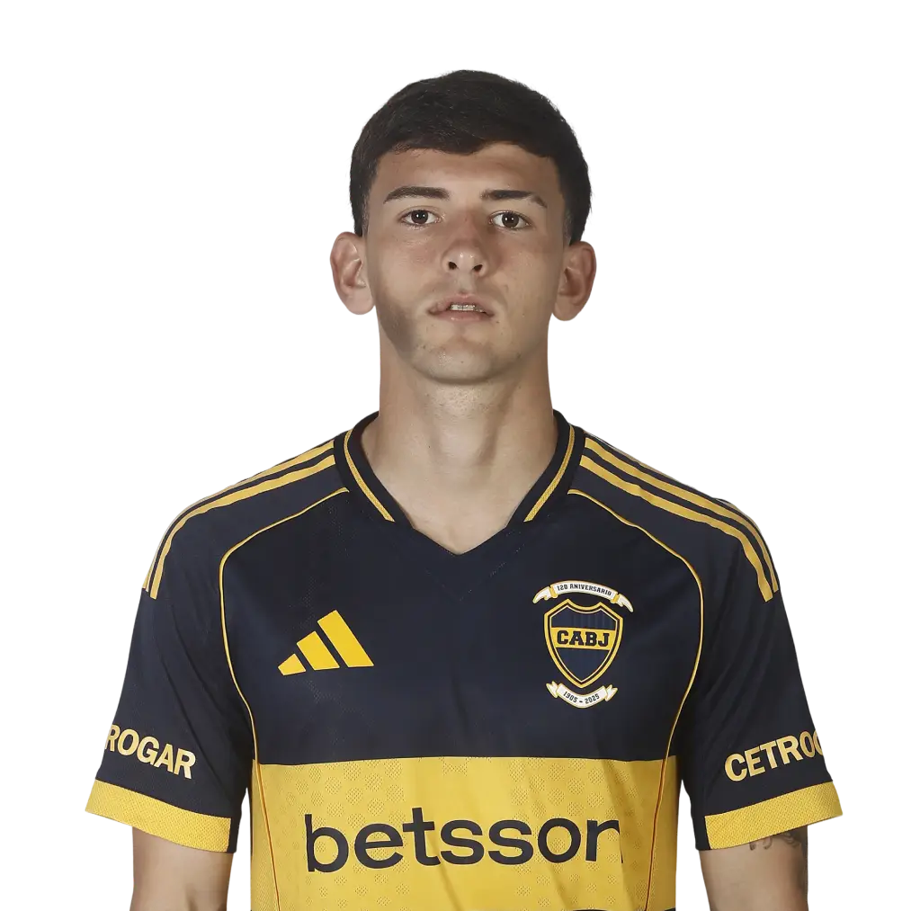
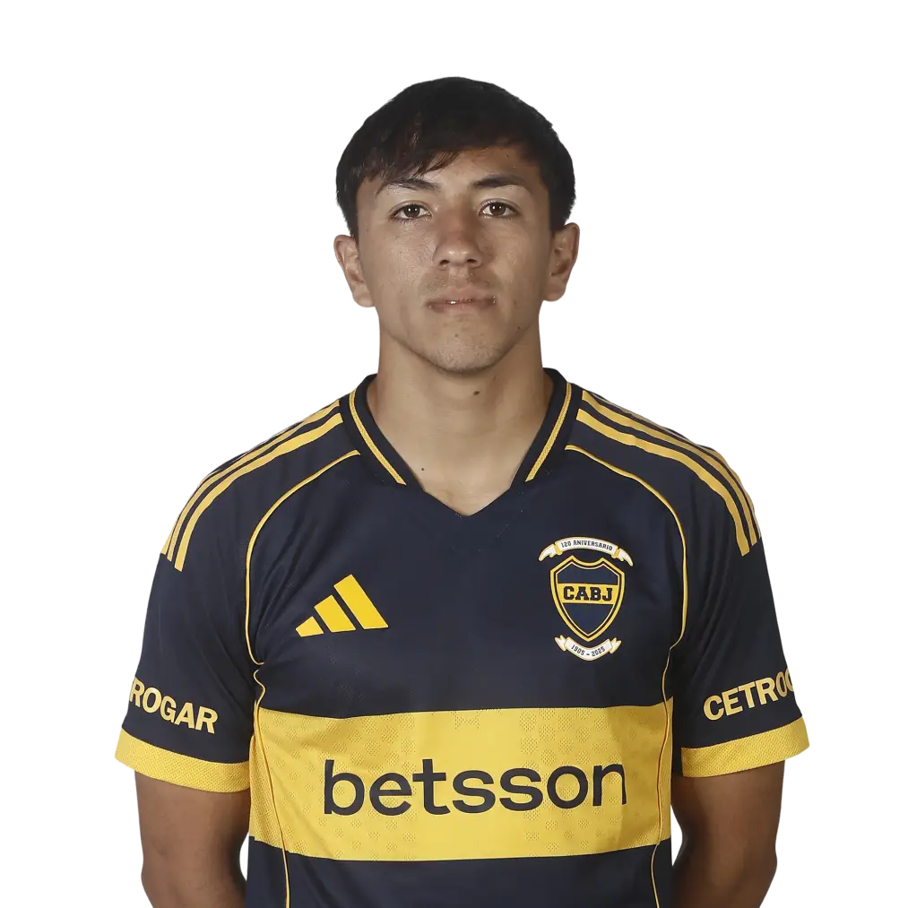

Leandro Paredes
Edad: 31 años
Altura: 1.82 m
Procedencia: Roma (Italia)
Nacionalidad: Argentina
Posición: Mediocamista
Carlos Palacios
Edad: 25 años
Altura: 1.80 m
Procedencia: Colo Colo (Chile)
Nacionalidad: Chile
Posición: Mediocamista
Ignacio Miramón
Edad: 22 años
Altura: 1.73 m
Procedencia: Lille (Francia)
Nacionalidad: Argentina
Posición: Mediocamista
Williams Alarcón
Edad: 25 años
Altura: 1.82 m
Procedencia: Huracán
Nacionalidad: Chileno
Posición: Mediocamista
Agustín Martegani
Edad: 25 años
Altura: 1.82 m
Procedencia: San Lorenzo
Nacionalidad: Argentina
Posición: Mediocamista
Alan Velasco
Edad: 23 años
Altura: 1.67 m
Procedencia: Dallas FC (EE.UU.)
Nacionalidad: Argentina
Posición: Mediocamista
Ander Herrera
Edad: 36 años
Altura: 1.82 m
Procedencia: Athletic Bilbao (España)
Nacionalidad: España
Posición: Mediocamista
Kevin Zenón
Edad: 24 años
Altura: 1.81 m
Procedencia: Unión
Nacionalidad: Argentina
Posición: Mediocamista
Malcom Braida
Edad: 28 años
Altura: 1.76 m
Procedencia: San Lorenzo
Nacionalidad: Argentina
Posición: Mediocamista
Tomás Belmonte
Edad: 27 años
Altura: 1.78 m
Procedencia: Toluca (México)
Nacionalidad: Argentina
Posición: Mediocamista

Camilo Rey Domenech
Edad: 19 años
Altura: 1.74 m
Procedencia: Inferiores
Nacionalidad: Argentina
Posición: Mediocamista
Milton Delgado
Edad: 20 años
Altura: 1.66 m
Procedencia: Inferiores
Nacionalidad: Argentina
Posición: Mediocamista
Juan Cruz Payal
Edad: 20 años
Altura: 1.68 m
Procedencia: Inferiores
Nacionalidad: Argentina
Posición: Mediocamista

Santiago Dalmasso
Edad: 21 años
Altura: 1.81 m
Procedencia: Inferiores
Nacionalidad: Argentina
Posición: Mediocamista

Joaquín Ruiz
Edad: 19 años
Altura: 1.79 m
Procedencia: Inferiores
Nacionalidad: Argentina
Posición: Mediocamista